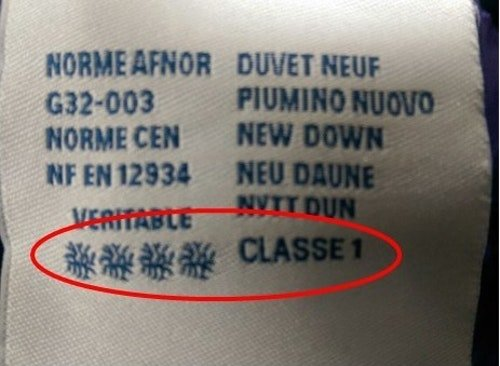

如何挑選羽絨衣

GQ教你利用「看、聞、摸、壓、抖、穿」6步驟，不只教你怎麼判斷它的品質好壞，同時也能辨別羽絨衣的真偽！
文：XiaoYao Liu / 洪宥鈞 / 王子琪 / Ren 當決定好要購入一件羽絨外套時，相信大家都會考慮到，究竟在挑選時該怎麼判斷羽絨衣的品質好壞？有沒有可能穿一陣子之後，裡面的「絨」滿天飛？或是它是否真能達到保暖禦寒的功效？ 別擔心，現在GQ教你利用「看、聞、摸、壓、抖、穿」6步驟，不只教你怎麼判斷它的品質好壞，同時也能辨別羽絨衣的真偽，想挑選一件完美的羽絨外套，以下請看仔細囉！ 《羽絨外套挑選秘訣》 仔細端倪外套是否有顯而易見的鑽絨問題，以及針腳是否精細整齊，車縫線扭曲不平容易導致穿絨，而充絨均勻與否則影響美觀，更關係到保暖功效。最後注意服飾標籤的羽絨比例以及國際檢驗標示，有些羽絨服飾的洗標上會有歐洲羽絨協會的標誌，四顆絨朵象徵該羽絨衣所使用的羽絨乃最高等級。

鼻子貼近羽絨外套做深呼吸，檢驗有無腥味或異味。如有腥味或異味，表示該服飾所使用的羽絨沒有經過縝密處理和嚴格消毒。 羽絨取自於水禽下腹部的細軟絨毛，其三維結構使之富有絕佳保暖度，絨毛纖維上密布的三角形細小氣孔，更能隨氣溫變化而膨脹收縮，產生調溫功能。 覆蓋於水禽身體外層的羽毛雖然沒有保暖度，卻因為其平面結構而具有支撐力，能夠避免羽絨受壓和遇潮後不易鼓起的情形，使衣服保有空氣，幫助蓄熱，因此羽絨外套的最佳充絨比例為90%的絨朵（羽絨）與10%的絨絲（羽毛）。除了閱讀服飾標籤，也可用手觸摸，如果觸感柔軟就代表羽絨成分高且羽毛片或羽毛梗少，能夠有效鎖住體溫。 除了柔軟度，羽絨外套的蓬鬆度也透露填充物品質優劣。如果以手按壓羽絨外套並隨即將手鬆開，按壓處回復速度很慢，表示填充物品質欠佳，甚至有可能是以其他材質濫芋充數，如果快速回復原狀，表示其羽絨的含絨率高、品質好，保暖效果佳。 穿羽絨外套最怕飛「絨」在天的窘況。選購羽絨外套時，可以透過輕抖或輕拍外套的小動作，篩選出防穿絨技術不夠確實的外套。雖然羽絨質地極其輕柔細緻，穿絨在所難免，但是許多專業品牌已經利用絎縫工藝或創新面料，將此類問題將至最低。 選購羽絨外套時務必試穿，並依個人習慣挑選適合的尺寸與款式。例如內搭冬天裝束時，外套尺寸是否適中，身體是否方便伸展，以及袖口是否透風等細節。
《5招！羽絨外套洗滌與保存方式》 羽絨取自於水禽，一般而言羽絨外套並不怕水。考慮到洗衣機的力道會破壞羽絨填充包層的均勻度，因此手洗為最佳洗滌方式：將羽絨外套放入倒有中性冷洗精的冷水中，浸泡約10至15分鐘，於此同時可用軟刷輕拭汙穢處，之後大量沖水，並將羽絨外套內的空氣擠壓出來。其中清潔劑沖洗動作務必徹底，避免清潔劑殘留在外套內，傷害羽絨材質。 避免用力扭乾破壞羽絨填充包層，清洗後的羽絨外套可平鋪至脫水槽中低速脫水，再自然陰乾。待羽絨外套八成乾時輕拍羽絨，使之均勻分佈每一填充包層；全乾後，輕拍整件外套，即可恢復蓬鬆。羽絨怕熱，切忌直接曝曬太陽。 過去不建議羽絨外套採用乾洗的方式，因為乾洗所使用的化學藥劑易破壞羽絨材質，進而降低羽絨外套的蓬鬆度及保暖度。 但隨著科技進步，許多羽絨服飾品牌皆推出可乾洗的面料材質，不過每件羽絨服飾的洗滌方式都有所不同，建議遵照其洗標說明即可。 羽絨外套務必確實清洗並乾燥後，再作收納。雖然羽絨外套的優點在於可以捲曲至極小的體積，但仍建議平時以吊掛的方式收藏，以保持羽絨蓬鬆度。 乾洗後的羽絨外套記得先以懸掛至通風處，使化學藥劑揮發，再作收納，避免化學藥劑殘留，傷害面料。 延伸閱讀： 本文獲GQ TAIWAN授權刊登，原文：6訣竅！教你羽絨外套挑選 責任編輯：羊正鈺 核稿編輯：楊士範